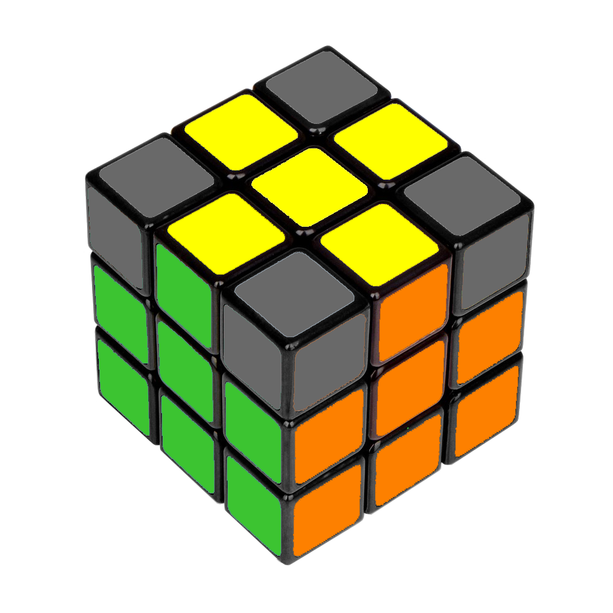

Glossaire
Le jargon du Rubik's Cube
Pour vous apprendre à résoudre le Rubik's Cube, nous allons utiliser un vocabulaire particulier détaillé ci-dessous :
Les faces:
Les colonnes:

Les couronnes:

Le Rubik’s Cube (ou Cube de Rubik) fut inventé le 19 mai 1974 par Ernő Rubik.
Ernő Rubik est sculpteur, architecte et professeur de design hongrois, né le 13 juillet 1944 à Budapest (Hongrie). Il est connu mondialement pour sa .
Le Rubik’s Cube est un casse-tête géométrique à trois dimensions composé de 26 pièces.
L’idée initiale d’Ernő Rubik était de construire un cube afin d’amener ses étudiants à deviner quel était son mécanisme interne, comment les petits cubes pouvaient tourner suivant trois axes tout en restant solidaires, et ainsi de les intéresser à la géométrie en 3 dimensions.
Ce n’est qu’ensuite qu’il eut l’idée (par la suggestion d’un ami) de colorer chaque face d’une couleur différente, constatant alors qu’après mélange, l’ordre initial du cube s’avérait extrêmement difficile à retrouver (une chance sur 43 252 003 274 489 856 000 à chaque rotation). Il eut alors l’idée de le commercialiser en tant que « casse-tête » géométrique et mathématique.
En Hongrie, le cube gagne en popularité par le bouche-à-oreille, et est bientôt connu dans toute l’Europe. En septembre 1979, à l'instigation de Bernard Farkas3, un accord est signé avec l'entreprise "Ideal Toys" pour distribuer le cube mondialement. Ideal Toys renomme alors le cube « Rubik’s Cube » et les premiers exemplaires sont exportés de Hongrie vers mai 1980, en direction de Londres, de New York et de Paris.
Aujourd’hui, le Rubik’s Cube est copié sous licence par de nombreux distributeurs par le monde.
Pour vous apprendre à résoudre le Rubik's Cube, nous allons utiliser un vocabulaire particulier détaillé ci-dessous :
Dans cette partie, nous allons vous apprendre une première méthode pour résoudre le cube. Ce n'est pas une méthode pour réalser des temps, mais pour résoudre le cube en apprenant quelques algorithmes simples.
Elle se décompose en 8 étapes :
Dans cette première étape nous allons commencer par réaliser la croix blanche. Techniquement, vous pouvez commencer par n'importe quelle face, mais nous allons vous expliquer la résultion du cube en commençant par la face blanche.

Si vous n'avez pas réalisé la "croix blanche parfaite" lors de la première étape, vous allez devoir positionner les arretes blanche au bon endroit. Faites tourner la couronne du haut afin d'avoir le maximum d'arrêtes bien placées.
Vous devriez tomber sur 2 cas :
Si vous êtes dans le cas 1, tenez le cube avec une face bien placée face à vous.
Si vous êtes dans le cas 2, tenez le cube avec une face mauvaise face à vous et une bonne sur la droite.
Voici l'algorithme que vous allez devoir utiliser pour compléter cette étape, vous devez le réaliser une fois pour le cas 1, vous serez alors dans le cas 2. Il ne reste plus qu'à le réaliser une seconde fois :
Voici le résultat attendu :
Une fois la que la croix blanche parfaite est réalisée, prendre le cube face jaune vers le haut, puis faite trouner le couronne du haut afin de placer le coin blanc au dessus de sa future position. Vous pouvez tomber sur 3 cas :
Voici l'algorithme que vous allez devoir utiliser pour compléter cette étape, vous devez le réaliser une fois pour le cas 1, 3 fois pour le cas 2 et 5 fois pour le cas 3 :
Voici le résultat attendu :
Répétez cet algorithme pour les 3 coins restants.
Voici le résultat attendu :
Afin de réaliser la deuxième couronne, vous allez devoir faire tourner la couronne du haut pour arriver à un résultat similaire à celui ci-dessous. Vous devez vous imaginer un "T" à l'envers, avec l'arrête et le centre de la même couleurs. La couleur du dessus ne doit pas être jaune.
Pour le premier cas, vous devez "descendre l'arrête à droite", pour cela utilisez l'algorithme suivant :
Pour le deuxième cas, vous devez "descendre l'arrête à gauche", pour cela utilisez l'algorithme suivant :
Répétez cette étape pour les autres faces/couleurs pour obtenir le résultat suivant :


La prochaine étape consiste à realiser la croix jaune. A ce moment de la résolution du cube, vous êtes forcément dans l'une des 3 configurations suivantes :
Voici l'algorithme que vous allez devoir utiliser pour compléter cette étape, vous devez le réaliser une fois pour le cas 1, deux fois pour le cas 2 et trois fois pour le cas 3 :
Vous devez obtenir le résultat suivant :
Vous devez maintenant tourner la couronne du haut afin de placer le maximum d'arrêtes au bon endroit.
Il y a 2 cas possibles:
Si vous êtes dans le cas 1, tenez le cube avec une face bien placée face à vous.
Si vous êtes dans le cas 2, tenez le cube avec une face mauvaise face à vous et une bonne sur la droite.
Voici l'algorithme que vous allez devoir utiliser pour compléter cette étape, vous devez le réaliser une fois pour le cas 1, vous serez alors dans le cas 2. Il ne reste plus qu'à le réaliser une seconde fois :
Voici le résultat attendu :
Vous devez maintenant trouver un coin jaune bien placé, c'est à dire quil doit se trouvé au croisement des 3 faces qui ont les mêmes couleurs que les siennes.
Voici un exemple:
Il se peut que ce coin soit directment dans le bon sens, cela vous évitera d'avoir à le replacer dans la phase suivante.
Voici maintenant un des cas possible:

Réalisez maintenant l'algorithme ci-dessous, autant de fois que mécessaire pour que les 4 coins soient bien placés:
Voici les 4 faces d'un des résultats que vous pouvez obtenir:

Vous y êtes presque ! La dernière étape est la plus mystérieuse, au fur et a mesure vous allez voir votre cube se défaire pour à la fin se résoudre. Il faut maintenant prendre le cube face blanche vers le haut.